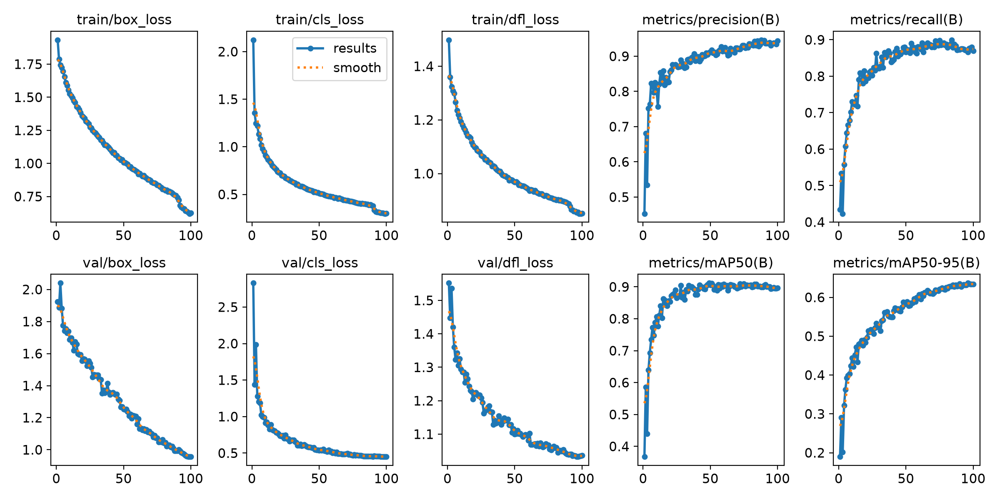
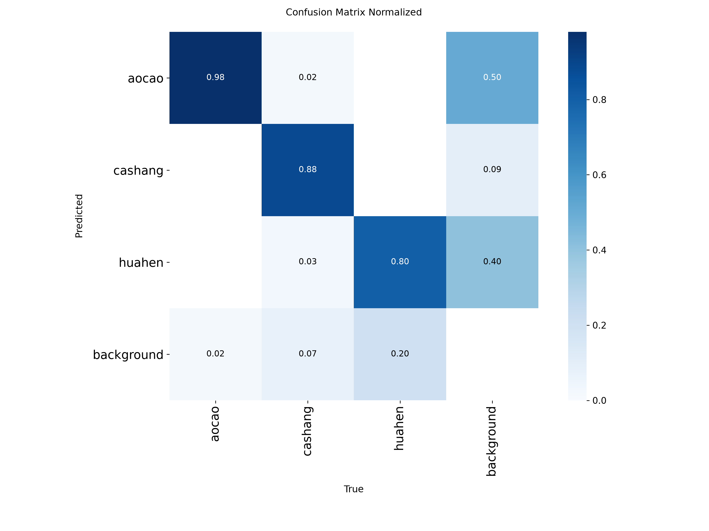
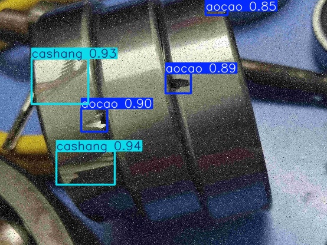
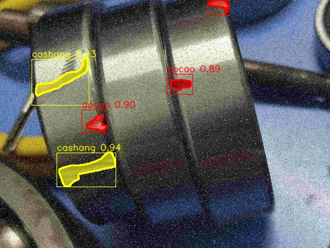
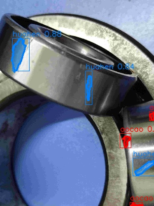
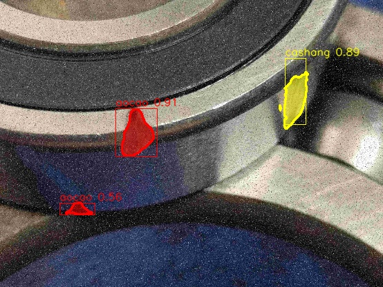
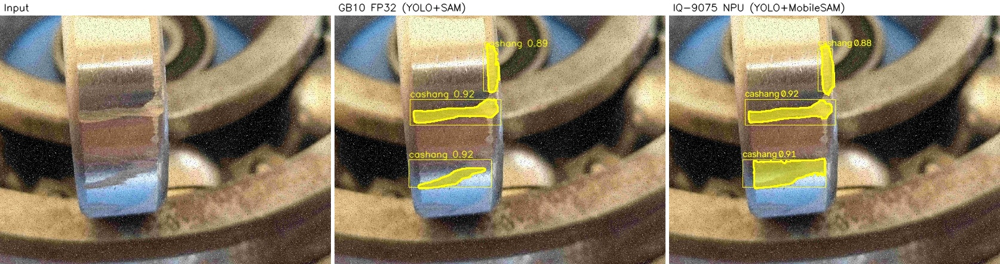
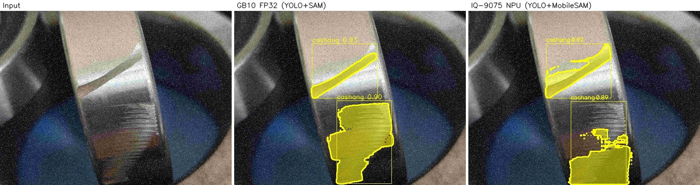
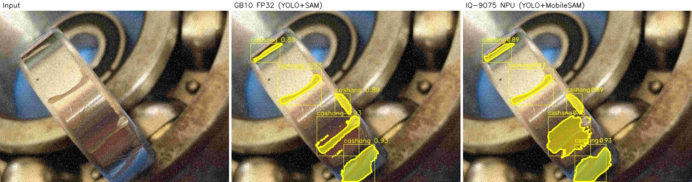

Masks without mask labels
Getting pixel-level defect annotations for manufacturing data is slow and expensive, and the public dataset I used doesn't have any. What it can support is a box detector, since bounding boxes are cheap to label. The trick that makes segmentation possible anyway: Segment Anything accepts a bounding box as a prompt. So the detector finds each defect, the box corners go to SAM as a two-point prompt, and SAM returns the mask. No segmentation training, no mask labels, and the detector's class label rides along with each mask.
I built the same pipeline twice:
| Workstation benchmark | Edge deployment | |
|---|---|---|
| Hardware | NVIDIA GB10 (Grace-Blackwell) | Qualcomm Dragonwing IQ-9075, Hexagon HTP v73, 100 TOPS |
| Detector | YOLOv8s, FP32 PyTorch | YOLOv8s, FP16 QNN context binary |
| Segmenter | SAM 1.0 ViT-H (637M-param encoder) | MobileSAM (TinyViT, 5M-param encoder), FP16 |
| Runtime | ultralytics + segment-anything | ONNX Runtime QNN EP on Qualcomm Ubuntu |
The workstation version is the benchmark; everything the NPU produces gets judged against it.
The dataset, and where the labels were hiding
The images are from a public bearing-defect dataset by Kangning Li on figshare (CC0): 5,824 images at
554×416, covering three surface defect types, aocao (groove), cashang (scratch)
and huahen (scratch-mark). The dataset article itself ships images only, no annotations, which
at first looked like a dead end for training anything.
zhou/ folder with the complete labeled
split: 4,660 training and 582 validation image–label pairs in YOLO format, with all three classes well
represented. That saved weeks of annotation work.
Training the detector
YOLOv8s, fine-tuned from COCO weights at 640 px, batch 32, 100 epochs. Training took about 1.6 hours on the GB10. The first attempt actually crashed inside an nvrtc JIT call; the GB10's Blackwell GPU (compute capability 12.1) isn't known to PyTorch's CUDA 12.8 wheels, and switching to the CUDA 13 build fixed it. Worth knowing if you have one of these machines.
| Class | Images | Instances | Precision | Recall | mAP@50 | mAP@50-95 |
|---|---|---|---|---|---|---|
| all | 582 | 2039 | 0.933 | 0.867 | 0.895 | 0.637 |
| aocao (groove) | 558 | 1499 | 0.970 | 0.963 | 0.977 | 0.720 |
| cashang (scratch) | 146 | 219 | 0.990 | 0.885 | 0.937 | 0.757 |
| huahen (scratch-mark) | 196 | 321 | 0.841 | 0.754 | 0.769 | 0.433 |


The workstation pipeline: YOLO + SAM ViT-H
On the GB10 I run the largest SAM checkpoint (ViT-H, 2.4 GB). The image encoder runs once per image, and all detected boxes are segmented in a single batched decoder call, which keeps things around five milliseconds per image for detection plus a fraction of a second for the masks. Mask colors follow the class: red for grooves, yellow for scratches, blue for scratch-marks.




Porting it to the IQ-9075
The goal on the board was to keep every heavy computation on the Hexagon NPU. Three things shaped how the port actually went:
ViT-H doesn't fit an NPU
A 637M-parameter encoder is far beyond what the HTP can hold. I swapped in MobileSAM, whose 5M-parameter TinyViT encoder produces very similar masks. Box prompting survives the swap unchanged.
HTP compilation needs Qualcomm silicon
Compiling locally fails on non-Qualcomm machines, so all models were compiled through Qualcomm AI Hub for this exact SoC. AI Hub also profiles the compiled model on a real hosted IQ-9075, which turned out to be very useful.
The runtime is ONNX Runtime's QNN EP
AI Hub wraps each compiled HTP binary in an ONNX file that ONNX Runtime can load from Python. One catch: on recent ONNX Runtime versions the QNN provider is a plugin that has to be registered explicitly before it exists.
The full on-device implementation, including the runner script and deployment notes, is in the MobileSAM_BallBearing repository.
What quantization broke, and how I found it
My first production build quantized the detector to W8A16 (INT8 weights, INT16 activations), which is the textbook way to use an NPU's full integer throughput. It compiled cleanly, every op mapped to the HTP, and the board ran it happily. The detections, however, were visibly worse than the workstation's, and once I looked at the raw numbers the problem was unmistakable.
The root cause sits in how Ultralytics exports YOLOv8: it's one end-to-end graph whose head concatenates box coordinates (values up to 640) and class probabilities (values up to 1) into a single output tensor. Post-training quantization has to pick one scale for that tensor, and the box range wins; on top of that, the box-decoding arithmetic inside the head gets quantized too. The class scores simply don't survive. This turns out to be a known weakness of quantizing YOLO exports whole, and it's why Qualcomm's own YOLOv8 recipe restructures the head before quantizing.
The fix I shipped is straightforward: run the detector in FP16, which the HTP supports natively. Before redeploying I verified the FP16 build on a hosted IQ-9075 with real bearing images:
| Image | FP32 reference (top-3 conf.) | NPU FP16 (top-3 conf.) | NPU W8A16 |
|---|---|---|---|
| 1000.jpg | 0.921 / 0.916 / 0.913 | 0.918 / 0.914 / 0.910 | 0.500 |
| 1001.jpg | 0.912 / 0.908 / 0.906 | 0.908 / 0.902 / 0.900 | 0.500 |
| 1002.jpg | 0.932 / 0.932 / 0.932 | 0.931 / 0.930 / 0.930 | 0.500 |
The same investigation surfaced two smaller bugs that are easy to hit: compiling with quantized model
I/O exposes uint16 tensors whose scale and zero-point the board code can't recover (keep model I/O in
float32 and let the compiled context convert internally), and OpenCV's NMS API expects boxes as
x,y,w,h where I was passing corner coordinates. Both fixed.
How close is the NPU to the workstation?
With the FP16 detector deployed, I ran both pipelines over the same 152 input images and wrote a small tool that recovers the annotation masks from each rendered output and scores the agreement between the two sets:
| Class | Mean overlay IoU | Median | Defects (GB10) | Defects (NPU) |
|---|---|---|---|---|
| aocao (groove) | 0.38 | 0.36 | 578 | 554 |
| cashang (scratch) | 0.69 | 0.69 | 480 | 527 |
| huahen (scratch-mark) | 0.38 | 0.47 | 110 | 118 |
| overall (any class) | 0.71 | 0.70 | — | — |
The numbers make more sense next to the images. Detection agrees almost perfectly: boxes land in the same places, confidences are within about 0.01, and the per-class defect totals differ by only 5–10%. What drags the IoU down is mask shape, which is exactly where the two segmenters differ by design; ViT-H traces thin scratches more crisply than MobileSAM does, and on very small grooves a handful of boundary pixels is enough to sink the IoU even when both models mark the same defect.



Speed on the device
These numbers come from AI Hub profile jobs on a real hosted IQ-9075 EVK, not an emulator:
| Model (FP16) | Latency | Ops on NPU | Peak memory | PSNR vs FP32 |
|---|---|---|---|---|
| MobileSAM encoder | 101.6 ms | 497 / 497 | 12–30 MB | 46.9 dB |
| MobileSAM decoder (per defect) | 6.0 ms | 866 / 866 | 4–10 MB | 60.5 dB |
With the detector adding roughly 10–25 ms, a full image lands around 140–160 ms, or 6–7 frames per second, entirely on the NPU. The encoder runs once per image and the decoder once per defect. For reference, 30 dB PSNR is usually considered good agreement; 47–60 dB means the NPU output is numerically almost indistinguishable from desktop full precision.
Things I'd tell anyone doing this
Test quantized models off-device first
My broken W8A16 build reproduced its failure on a plain CPU in seconds. If I had checked that before deploying, I'd have saved a full debug cycle on the board.
PTQ can silently kill a YOLO head
Box coordinates and class probabilities sharing one output tensor means one quantization scale for ranges that differ by 640×. Either restructure the head before quantizing or don't quantize it.
FP16 on a modern NPU is a real option
No calibration data, near-zero accuracy loss, and still 100% of ops on the NPU. Integer quantization is an optimization to earn, not a requirement.
Check tensor layouts on compiled artifacts
The compiled MobileSAM came out channels-last while YOLO stayed channels-first. Nothing warns you; read the ONNX inputs before writing the runner.
Keep model I/O in float
Quantized I/O exposes integer tensors whose scale and zero-point your board code can't see. Let the compiled context handle conversion internally.
Read the paper before annotating
An "images-only" dataset had its complete label set sitting inside the author's code archives. An hour of digging beat weeks of labeling.
Code, data and references
- NPU implementation: github.com/MushfiqShovon/MobileSAM_BallBearing — the IQ-9075 pipeline: compiled-model runner, QNN EP setup, deployment notes
- Desktop pipeline: github.com/MushfiqShovon/SAMwithBallbearing — training scripts, YOLO + SAM ViT-H benchmark, comparison tooling
- Dataset (figshare, CC0, by Kangning Li): images · YOLO archives, incl. the labels · YOLOv9 archive
- Companion paper: Bearing defect detection based on the improved YOLOv5 algorithm, PLOS One, 2024
- Models: Ultralytics YOLOv8 · Segment Anything · MobileSAM
- Tooling: Qualcomm AI Hub · ONNX Runtime QNN Execution Provider